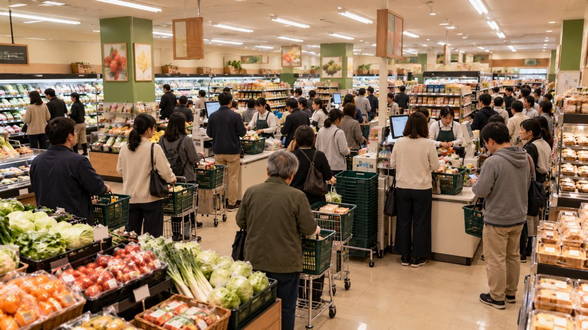

仕事帰りのお客様レジ待ち
「、夕食の買い物だけで時間がかかりました。」
本部の評価は売上だけ。ただし、ひとつの改善が別の苦情を生むこともあります。
まずは今日の引き継ぎで、一件だけ対応してみましょう。明日の開店時には、この練習後の売場の状態から始まります。
1日3箇所まで文章を調べられます。同じ箇所の再確認は無料。発見した対応案は次の日も残ります。実行できる施策は1日1件、効果は原則翌朝に反映。日売上見込み0万円以下で営業停止。グレーな対応は後日に発覚することがあります。進行は自動保存されます。

文章を調べる：あと3箇所
お客様の声の下線をタップすると、対応策が見つかります。
選ぶと当日の営業を終えます。施策の効果は翌営業日から。毎朝、新しいご意見も届きます。未解決の苦情が多いと翌朝に連鎖します。施策は、ご意見の下線部分から発見できます。1日3箇所まで調べられます。
日売上見込みが0万円以下になったら、その時点で店長解任・営業停止。本部が確認するのは売上です。7日目の施策の効果は最終集計で確認されます。